Combinators
Pure functions that compose SpaceDesc values into larger trees. The core vocabulary is tiny — beside_x, beside_y, above, repeat_unit, grid — with transforms (scale, mirror_*, with_height) layered on top. Infix operators give the same behaviour in a compact syntax.
# Two rooms side by side on the x axis (|), stacked in depth on y (/),
# then a second storey above the first (^).
ground = room(:living, :living_room, 5.0, 4.0) | room(:kitchen, :kitchen, 3.0, 4.0)
second = room(:bed1, :bedroom, 4.0, 3.0) | room(:bed2, :bedroom, 4.0, 3.0)
house = second ^ ground # axis precedence: ^ > / > |
# A 3-wide column of identical studios:
studios = repeat_unit(room(:u, :studio, 6.0, 5.0), 3; axis=:x)
# A 4×2 array of 5×5 m clinics:
ward = grid((r, c) -> room(Symbol("c_$(r)_$(c)"), :clinic, 5.0, 5.0), 2, 4)A zero-sized void() is the identity for all three composition operators, so it can be spliced into a composition without effect (see Leaf Constructors).
Spatial Composition
KhepriBase.beside — Function
beside(a, b; axis=:x, shared_wall=true, align=:start)
beside(a, b, rest...; axis=:x, shared_wall=true, align=:start)Place two or more spaces adjacent along the given axis (:x or :y). The variadic form folds left over all arguments.
KhepriBase.beside_x — Function
beside_x(a, b; shared_wall=true, align=:start)Place two spaces side by side along the x-axis. A zero-sized void() on either side is elided, so beside_x(void(), a) === a.
KhepriBase.beside_y — Function
beside_y(a, b; shared_wall=true, align=:start)Place two spaces side by side along the y-axis (depth). A zero-sized void() on either side is elided, so beside_y(void(), a) === a.
KhepriBase.above — Function
above(a, b; slab_between=true)
above(a, b, rest...; slab_between=true)Stack two or more spaces vertically. a sits on top of b. A zero-sized void() on either side is elided, so above(void(), a) === a. The variadic form folds left over all arguments.
Infix Operators
Three units produced by repeat_unit(unit, 3; axis=:x):

A 2 × 3 grid of identically-shaped cells produced by grid:

A subtree and its mirror_x-transformed twin:

scale stretches an entire subtree:

with_height raises every placed space's ceiling:

repeat_unit with mirror_alternate=true pinwheels every other copy:

Repetition and Grid
KhepriBase.repeat_unit — Function
repeat_unit(unit, n; axis=:x, mirror_alternate=false)Repeat unit n times along axis. When mirror_alternate is true, even-indexed copies are mirrored.
KhepriBase.grid — Method
grid(cell_fn, rows, cols)Create a grid layout. cell_fn(row, col) is called for each cell and must return a SpaceDesc.
Transforms
KhepriBase.scale — Method
scale(s, sx, sy=sx)Scale a space description by sx along x and sy along y.
KhepriBase.mirror_x — Function
mirror_x(s)Mirror a space description about the x-axis.
KhepriBase.mirror_y — Function
mirror_y(s)Mirror a space description about the y-axis.
KhepriBase.with_height — Function
with_height(s, h)Override the floor-to-ceiling height of a space to h.
KhepriBase.with_props — Function
with_props(s, props)Return a space description that merges the given props NamedTuple into every placed space under s at layout time. Existing per-space props take precedence over the overlay.
KhepriBase.tag_wall_family — Function
tag_wall_family(s, family_name)Attach family_name as a wall_family prop on every placed space under s. At generation time, walls between spaces that agree on the family name use the corresponding WallFamilyDef (from AA's element-rule layer) is looked up in rules.families.walls, overriding the rule system. Named tag_ rather than with_ to avoid a collision with Khepri's with_wall_family context manager.
KhepriBase.tag_slab_family — Function
tag_slab_family(s, family_name)Attach family_name as a slab_family prop on every placed space under s. At generation time, each floor slab looks the name up in rules.families.slabs and uses it in place of the default SlabSpec. Named tag_ rather than with_ to avoid a collision with Khepri.